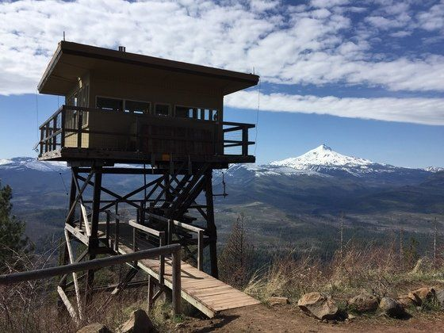

Today in Alberta there are 192 fire detection stations within the forests and only 46 of these interact remotely. These 46 stations don't require human interaction and report climate data on an hourly basis. The other stations require a human to manually observe and report climate data. These types of stations only report in once or twice per day. Overall this is hugely inefficient system as the technologies of today allow for quicker and more accurate detection of fires. We can better manage our human and technical resources to improve fire detection in some of the of the most remote and forested areas.
Security
The program embedded within the modules will be responsible for reporting back if it has been tampered with. This is done by a strict threshold of vibration and ongoing monitoring by an onboard vibration sensor. All communication to and from the modules is safe because block chain?
Particle Electron
Our first prototypes utilized the technology present with the particle electron and gave us a preliminary idea of how this system could work. However the particle we were working with eventually failed and due to circumstances beyond our control we were unable to recover from this set back. At this time we do not have a physical prototype of our field module.
Block Chain
Our choice to use blockchain technology. The vast array of blockchain technology has yet to be truly uncovered and the only definitive way to uncover these uses is to test it and apply it into new technologies and in new environments. We want to be on the leading edge of technology and have chosen to utilize and test this technology in our internet of things.
Databases, Angular and more
What even is our front end anymore?
Open Source
We made the decision to allow all the data collected by our modules to be open source and viewable to the world wide web. The idea brought forward is to create a vast internet of things and there is no better way to do that than to create a self reporting forest the world can see. As programmers we truly value the world of open source and the uses of the data we are collecting and showcasing has many uses far beyond what we currently have the knowledge to do.
In the Future
The future looks bright for this kind of technology as the uses of it are far beyond our imaginations. In the near future we would like to automatically warn fire departments if a module detects higher than normal heat signatures. We would also like to automatically graph the data from the sensors for researchers to get a sense of the long range trends in data. Our smart forest has abilities beyond our understanding but we are sure it will help us protect one of our most valuable resources in the future.
The development Team
This project was made by Jose Herrera, Austin Wattling, and Richard Huynh as part of the University of Calgary's 2018 hackathon. The theme of the Hackathon was "long range internet of things" and we have created a smart forest. We believe the long range internet of things applies both to idea of using a cellular connection as our form of long range communication and as this idea can and will be seen long into the future. We would like to thank all the sponsors of the event and the university of calgary for hosting us.